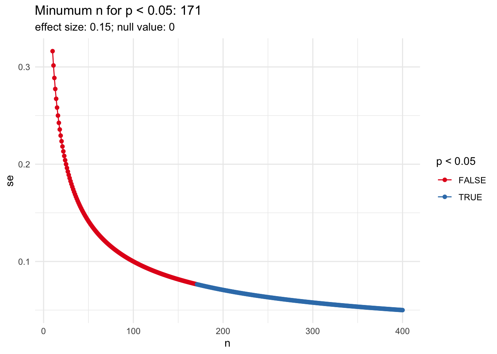
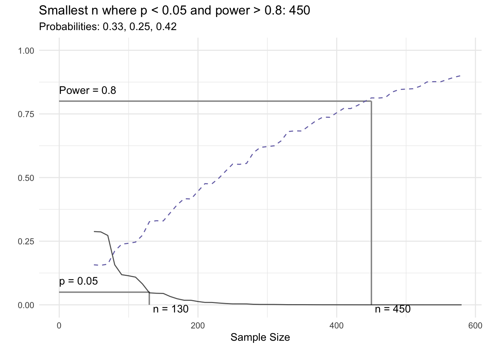
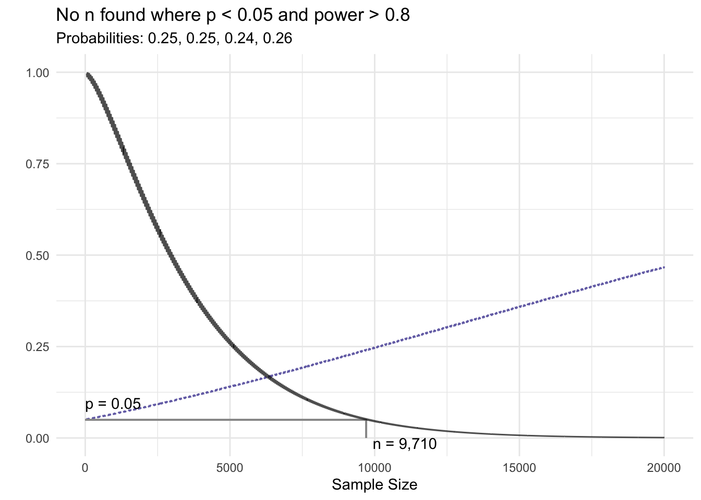
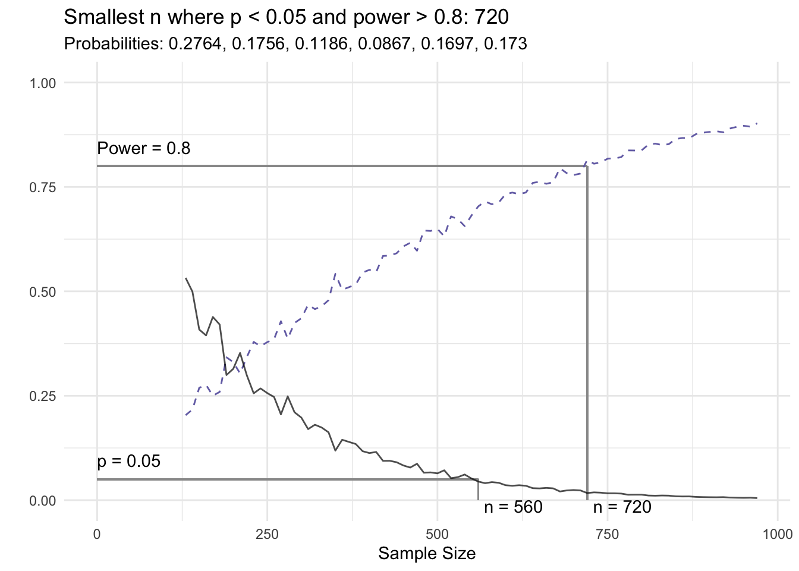

Sample size and statistical significance for chi-squared tests
R
Statistics
Author
Jason Bryer
Published
March 4, 2025
In this post we are going to explore the relationship between sample size (n) and statistical significance for the chi-squared (\(\chi^2\)) test. Recall that from the normal distribution, we construct a confidence interval using:
\[ CI = \bar{x} \pm z \cdot SE\]
where z is the test statistic and:
\[ SE = \frac{s}{\sqrt{n}} \]
where s is the sample standard deviation. Typically our null is zero in which case we reject the null hypothesis when the confidence does not span zero. If we wish to construct a 95% confidence interval, then \(z = 1.96\). Assuming the sample standard deviation is constant regardless of sample size (a fair assumption), then as n increases the standard error decreases. The following calculates the confidence interval for n ranging from 10 to 400 assuming a sample standard deviation of 0.15 and 95% confidence level. When \(n > 171\) then \(p < 0.05\).
# Define some parameterssig_level <- .95# Significance level, 95% herees <-0.15# Effect size in standard unitsnull_val <-0# null value#' Calculate the standard error#' #' This function will calculate the standard error from a vector of observations or with a given#' sample standard deviation and sample size.#' #' @param x numeric vector of observations.#' @param sigma the sample standard deviation.#' @param n sample size.standard_error <-function(x, sigma =sd(x), n =length(x)) {if(!missing(x)) { # Some basic error checkingif(sigma !=sd(x)) { warning('The sample standard deviation (sigma) is not equal to sd(x)')}if(n !=length(x)) { warning('The sample size (n) is not equal to length(x).' )} }return(sigma /sqrt(n))}# Create a data.frame with varying sample sizes and the corresponding standard errordf <-data.frame(n =10:400,se =standard_error(sigma =1, n =10:400))cv <-abs(qnorm((1- sig_level) /2)) # Critical value (z test statistic)df$ci_low <- es - cv * df$sedf$ci_high <- es + cv * df$sedf$sig <- null_val < df$ci_low | null_val > df$ci_highmin_n <- df$n[df$sig] |>min()ggplot(df, aes(x = n, y = se, color = sig)) +geom_path() +geom_point() +scale_color_brewer(paste0('p < ', (1- sig_level)), type ='qual', palette =6) +ggtitle(paste0('Minumum n for p < ', (1- sig_level), ': ', min_n),subtitle =paste0('effect size: ', es, '; null value: ', null_val))

The chi-squared (\(\chi^2\)) test statistic is defined as:
\[ \chi^2 = \sum{\frac{(O - E)^2}{E}} \]
where O is the observed count and E is the expected count. Unlike the standard error for numerical data, n is not explicitly in the formula and therefore makes it a bit more challenging to determine the impact sample size has rejecting the null hypothesis. Moreover, since the chi-squared is calculated from the cell counts in a table of varying length and dimension (one- or two-dimensions specifically) determining how n impacts rejecting the null or not requires more parameters.
Answering the question of how large does n need to be to detect a statistically significant result (i.e. to reject the null hypothesis) is refereed to as power. Whereas for calculating the power for numerical data had one parameter, the sample standard deviation, here we need to consider the proportion of observations within different cells. For example, consider we have a variable with three levels and we expect the proportion of observations in the three groups to be 33%, 25%, and 42%, respectively. If our sample size is 100 then we expect there to be 33, 25, and 42 and observations for the three categories. This function will, for varying sample sizes, calculate the counts for the categories to achieve that sample size, estimate the chi-squared statistic and record the p-value. There are other parameters that are documented below. A plot function is also defined using the S3 objected oriented framework.
#' Calculate p-value from a chi-squared test with varying sample sizes#'#' This algorithm will start with an initial sample size (`n_start`) and perform a chi-squared test#' with a vector of counts equal to `n * probs`. This will repeat increasing the sample size by#' `n_step` until the p-value from the chi-squared test is less than `p_stop`.#'#' @param vector of cell probabilities. The sum of the values must equal 1.#' @param sig_level significance level.#' @param p_stop the p-value to stop estimating chi-squared tests.#' @param max_n maximum n to attempt if `p_value` is never less than `p_stop`.#' @param min_cell_size minimum size per cell to perform the chi-square test.#' @param n_start the starting sample size.#' @param n_step the increment for each iteration.#' @return a data.frame with three columns: n (sample size), p_value, and sig (TRUE if#' p_value < sig_level).#' @importFrom DescTools power.chisq.test CramerVchi_squared_power <-function( probs,sig_level =0.05,p_stop =0.01,power =0.80,power_stop =0.90,max_n =100000,min_cell_size =10,n_start =10,n_step =10) {if(sum(probs) !=1) { # Make sure the sum is equal to 1stop('The sum of the probabilities must equal 1.') } elseif(length(unique(probs)) ==1) {stop('All the probabilities are equal.') } n <- n_start p_values <-numeric() power_values <-numeric() df <-ifelse(is.vector(probs),length(probs) -1,min(dim(probs)) -1) # Degrees of freedomrepeat { x <- (probs * n) |>round()if(all(x > min_cell_size)) { cs <-chisq.test(x, rescale.p =TRUE, simulate.p.value =FALSE) p_values[n / n_step] <- cs$p.value pow <- DescTools::power.chisq.test(n = n,w = DescTools::CramerV(as.table(x)),df = df,sig.level = sig_level ) power_values[n / n_step] <- pow$powerif((cs$p.value < p_stop & pow$power > power_stop) | n > max_n) {break; } } else { p_values[n / n_step] <-NA power_values[n / n_step] <-NA } n <- n + n_step } result <-data.frame(n =seq(10, length(p_values) * n_step, n_step),p_value = p_values,sig = p_values < sig_level,power = power_values)class(result) <-c('chisqpower', 'data.frame')attr(result, 'probs') <- probsattr(result, 'sig_level') <- sig_levelattr(result, 'p_stop') <- p_stopattr(result, 'power') <- powerattr(result, 'power_stop') <- power_stopattr(result, 'max_n') <- max_nattr(result, 'n_step') <- n_stepreturn(result)}#' Plot the results of chi-squared power estimation#'#' @param x result of [chi_squared_power()].#' @param plot_power whether to plot the power curve.#' @param plot_p whether to plot p-values.#' @param digits number of digits to round to.#' @param segement_color color of the lines marking where power and p values exceed threshold.#' @param sgement_linetype linetype of the lines marking where power and p values exceed threshold.#' @param p_linetype linetype for the p-values.#' @param power_linetype linetype for the power values.#' @param title plot title. If missing a title will be automatically generated.#' @parma ... currently not used.#' @return a ggplot2 expression.plot.chisqpower <-function( x,plot_power =TRUE,plot_p =TRUE,digits =4,segment_color ='grey60',segment_linetype =1,p_linetype =1,power_linetype =2, title, ...) { pow <-attr(x, 'power') p <-ggplot(x[!is.na(x$p_value),], aes(x = n, y = p_value))if(plot_power) {if(any(x$power > pow, na.rm =TRUE)) { min_n_power <-min(x[x$power > pow,]$n, na.rm =TRUE) p <- p +geom_segment(x =0,xend = min_n_power,y = pow,yend = pow,color = segment_color,linetype = segment_linetype) + ggplot2::annotate(geom ='text',x =0,y = pow,label =paste0('Power = ', pow),vjust =-1,hjust =0) +geom_segment(x = min_n_power,xend = min_n_power,y = pow,yend =0,color = segment_color,linetype = segment_linetype) + ggplot2::annotate(geom ='text',x = min_n_power, y =0,label =paste0('n = ', prettyNum(min_n_power, big.mark =',')),vjust =1,hjust =-0.1) } p <- p +geom_path(aes(y = power),color ='#7570b3',linetype = power_linetype) }if(plot_p) {if(any(x$sig, na.rm =TRUE)) { p <- p +geom_segment(x =0,xend =min(x[x$sig,]$n, na.rm =TRUE),y =attr(x, 'sig_level'),yend =attr(x, 'sig_level'),color = segment_color,linetype = segment_linetype) + ggplot2::annotate(geom ='text',x =0,y =attr(x, 'sig_level'),label =paste0('p = ', attr(x, 'sig_level')),vjust =-1,hjust =0) +geom_segment(x =min(x[x$sig,]$n, na.rm =TRUE),xend =min(x[x$sig,]$n, na.rm =TRUE),y =attr(x, 'sig_level'),yend =0,color = segment_color,linetype = segment_linetype) + ggplot2::annotate(geom ='text',x =min(x[x$sig,]$n, na.rm =TRUE),y =0,label =paste0('n = ', prettyNum(min(x[x$sig,]$n, na.rm =TRUE), big.mark =',')),vjust =1,hjust =-0.1) } p <- p +geom_path(alpha =0.7,linetype = p_linetype)# geom_point(aes(color = sig), size = 1) +# scale_color_brewer(paste0('p < ', attr(x, 'sig_level')), type = 'qual', palette = 6) }if(missing(title)) {if(any(x$power > pow, na.rm =TRUE) &any(x$sig, na.rm =TRUE)) { min_n <-min(x[x$sig & x$power > pow,]$n, na.rm =TRUE) title <-paste0('Smallest n where p < ', attr(x, 'sig_level'), ' and power > ', pow, ': ',prettyNum(min_n, big.mark =',')) } else { title <-paste0('No n found where p < ', attr(x, 'sig_level'), ' and power > ', pow) } } p <- p +ylim(c(0, 1)) +ylab('') +xlab('Sample Size') +ggtitle(title,subtitle =paste0('Probabilities: ', paste0(round(attr(x, 'probs'), digits = digits), collapse =', ')))return(p)}
Returning to our example above where the cell proportions are 33%, 25%, and 42%, we would need \(n \ge 130\) to reject the null hypothesis.
csp1 <-chi_squared_power(probs =c(.33, .25, .42))csp1[csp1$sig,]$n |>min(na.rm =TRUE) # Smallest n that results in p < 0.05
[1] 130
plot(csp1)

In the next example we have much smaller differences between the cells with 25%, 25%, 24%, and 26%. In this example \(n \ge 9,710\) before rejecting the null hypothesis.
csp3 <-chi_squared_power(probs =c(.25, .25, .24, .26), max_n =20000)csp3[csp3$sig,]$n |>min(na.rm =TRUE) # Smallest n that results in p < 0.05
[1] 9710
plot(csp3)

This function will work with two-dimensional data as well (i.e. across two variables). The following example from Agresti (2007) looks at the political affiliation across sex (see the help documentation for chisq.test().).
Chi squared power calculation
w = 0.1044358
n = 2757
df = 1
sig.level = 0.05
power = 0.9997872
NOTE: n is the number of observations
Agresti had a sample size of 2757, but we can ask the question what is the minimum sample size would they need to detect statistical significance? First, we convert the counts to proportions, then we can use the chi_squared_power() function to find the minimum sample size to reject the null hypothesis test.
M_prob <- M /sum(M) # Convert the counts to percentagescsp4 <-chi_squared_power(probs = M_prob)plot(csp4)

For a more robust application for estimating power for many statistical tests, check out the pwsrr R package and corresponding Shiny application.